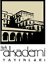

Jenerik
Sarsıcı Kıyamet Tasvirleriyle
Hâkka Sûresi Tefsîri
Dr. Faruk Tuncer

Copyright © Işık Akademi Yayınları, 2009
Bu eserin tüm yayın hakları Işık Yayıncılık Tic. A.Ş.’ye aittir.
Eserde yer alan metin ve resimlerin Işık Yayıncılık Tic. A.Ş.’nin önceden
yazılı izni olmaksızın, elektronik, mekanik, fotokopi ya da herhangi bir kayıt
sistemi ile çoğaltılması, yayımlanması ve depolanması yasaktır.
Editör
Zühdü MERCAN
Görsel Yönetmen
Engin ÇİFTÇİ
Kapak
İhsan DEMİRHAN
Sayfa Düzeni
Ahmet KAHRAMANOĞLU
ISBN
978-975-6079-96-6
Yayın Numarası
86
Basım Yeri ve Yılı
Çağlayan Matbaası
Sarnıç Yolu Üzeri No: 7 Gaziemir / İZMİR
Tel: (0232) 252 20 96
Ağustos 2009
Genel Dağıtım
Gökkuşağı Pazarlama ve Dağıtım
Merkez Mah. Soğuksu Cad. No: 31 Tek-Er İş Merkezi
Mahmutbey/İSTANBUL
Tel: (0212) 410 50 60 Faks: (0212) 445 84 64
Işık Akademi Yayınları
Bulgurlu Mahallesi Bağcılar Caddesi No: 1
34696 Üsküdar/İSTANBUL
Tel: (0216) 522 11 44 Faks: (0216) 522 11 78
www.akademiyayinlari.com